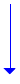
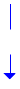
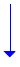
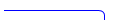
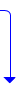
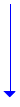

删除道路点

操作说明：
1.点击属性栏中的删除按钮；
2.系统弹框提示用户删除道路点后的一些关联影响，提示用户是否继续，如果是点击“确定”，否点击“取消”；
3.支持多个道路点同时删除。按ctrl可点击选择多个点，点击属性栏中的删除按钮，系统弹出对话框提示用户删除道路点之后对其它信息的影响；点击确认后，完成删除。
业务说明：
1） 删除RDNode信息后属性列表中的属性信息删除，地图上删除几何要素；
2） 删除RDNode信息相关的检查信息；
Node删除，首先，挂接在该Node上的Link也同时被删除，需要执行删除Link处理；其次，维护Node上的各类关系：
1） 同一关系：
① 除该node外，同一点关系仅包含一个node，则删除node的同时，解除同一点信息。
② 除该node外，同一点关系还包含两个或更多的node，则：如果此node为主要素，则将此node从同一关系中解除，从剩余的node中根据优先级选择一个主要素，同一点关系保留；如果此node不为主要素，则仅仅将此node从同一关系中解除，同一点关系保留；
2） 复杂关系：
a) 节点是CRFI的组成点：维护该CRFI，原则如下：
(1) 如果该CRFI只由该点组成，则删除该CRFI，进入删除CRFI业务.
(2) 如果该CRFI还包括其他组成要素，从CRFI的CRFI子要素中去掉该Node。
b) 节点是CRF Object的组成点（孤立点）：维护该Object，原则如下
(1) 如果该Object只由该点组成，则删除该Object，进入删除Object业务；
(2) 如果该Object还包括其他组成要素，从Object的ObjectNode子素中去掉该Node。
c) 虚拟连接：
从虚拟连接中删除包括该Node的子关系，如果删除后没有其他的组成关系存在，则直接删除该虚拟连接。
3） 节点是路口的组成点：维护该路口，原则如下：
a) 如果是单点路口，删路口节点，删除该路口；
b) 如果是多点路口中的子点，从路口的CrossNode子要素中删除该Node；
c) 如果是多点路口中的主点，从路口CrossNode子要素中删除该node后，从剩余的node中随机指定一个为主点，其余node为子点；
4） 关联关系：
包括出入口、收费站、电子眼索引的关联Node，对构成此信息的Node进行删除操作，将IC出入口、收费站、电子眼索引信息中的关联信息删除；
5） 立交关系：
e） 两两立交：node删除后，立交解除（考虑两点立交，线和节点立交）；
f） 多点立交：node删除后，立交信息中删除该node对应的立交GSCLink子要素，高度层次自动维护；
6） 既有立交关系又有同一关系的维护：
针对同一关系：删除道路node后，如果此时同一点关系中还有其他道路node，则将此node从同一点关系中解除，其余node不变；如果此时同一点关系中没有其他道路node，则删除同一点关系，其余node保持不变；
针对立交关系：
a） 两两立交：node删除后，立交解除（考虑两点立交，线和节点立交）；
b） 多点立交：node删除后，立交信息中删除该node对应的立交GSCLink子要素，高度层次自动维护；
7） 与ADAS的关联关系维护：挂接link的关联关系解除，如果此RDNODE有且仅挂接一个link，则NODE的关联关系也解除，如果此RD NODE挂接了两根及两根以上的link，则NODE的关联关系保留；
8） 对highway-13CY的维护：
① 如果删除的node为route、位置信息的组成node，则删除route、位置信息，同时，如果被删除的route所在的设施中有多个route组成，则将此route从设施中移除，设施保留；如果被删除的route所在的设施仅由此route组成，则将此设施删除；如果被删除的设施为主设，则删除主并设关系；如果被删除的设施为并设，那么，如果主并设中有多个并设，则将此并设从主并设中移除，主并设关系保留；如果主并设中仅有一个并设，则将主并设关系删除；
② 如果被删除的node为route中的前一node，则将route中的前一node号码赋值为0，route保留；
③ 如果删除node导致删除link，则请见删除道路link对highway的维护部分；
9） 对highway-NBT的维护：如果删除的node为高速节点的进入node，则删除高速节点关系；
实时控制：无
1.NODE种别编辑
2.NODE形态编辑
操作说明：
1.鼠标左键单击NODE种别的值，即可进行NODE种别的修改
2.修改完成，点击保存按钮，即可生成数据
实时控制：
业务要求：
无
操作说明：
1.鼠标左键单击NODE形态属性栏，进入NODE形态 的编辑场景，弹出NODE形态值可选择的列表
2.单击鼠标左键可选中对应的NODE形态值（可多选），选中即为增加NODE形态值
3.取消选中状态即为删除NODE形态值
4.点击“全部取消“按钮，所有属性值变为取消选中状态
5.修改完成，点击保存按钮，即可生成数据
6.点击NODE 形态值列表以外的区域，退出当前编辑
7.按ESC键，退出当前编辑
0 未调查
1 无属性
2 图廓点
3 CRF Info点
4 收费站
5 Highway起点
6 Highway终点
10 IC
11 JCT
12 桥
13 隧道
实时控制：
业务要求：
1.node形态：node形态增加或减少，系统会自动更新属性列表node形态条数；
2.当RDNODE种别为1：平面交叉点，node形态为30：铁路道口时，NODE的样式变为：空心的蓝方块。如果存在多个形态表且形态不同，其中包含‘30 铁路道口’，不做特殊显示。（设计具体的点样式）
3.删除node形态，系统自动更新属性列表node形态条数；
4.删除node形态时，若node形态全部删除，则程序自动保留一条记录为“无属性”
5、当存在多个形态值时，不允许“无属性”存在

取消全部
15 障碍物
16 门牌号码点
20 幅宽变化点
21 种别变化点
22 车道变化点
23 分隔带变化点
30 铁路道口
31 有人看守铁路道口
32 无人看守铁路道口
41 KDZone与道路交点
14 车站

IC / 桥
NODE形态（共2条）
IC
NODE形态（共2条）

NODE种别

选择道路点
定义类型

默认类型为道路点
捕捉道路点
选择工具栏

map界面

保存
删除
生成数据


取消
放弃修改


